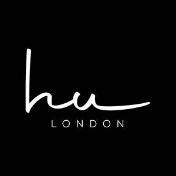

Trade Mark Journal No.2025/047 21 November 2025
UK00004291462 8 November 2025 (3,35)

- Class 3
- Beauty care cosmetics; Skin care cosmetics; Sets of cosmetic oral care products; Cosmetic products in the form of aerosols for skin care; Skin care products for animals; Body care cosmetics; Preparations and products for fur care; Eye care products, non-medicated; Skincare cosmetics; Cosmetics; Hair care lotions [for cosmetic use]; Skin care lotions [cosmetic]; Cosmetic products in the form of aerosols for skincare; Baby care products (Non-medicated -); Hair care creams [for cosmetic use]; Skin care oils [cosmetic]; Skin care creams [cosmetic]; Cosmetic creams for skin care; Cosmetic products for the shower; Sun care lotions [for cosmetic use]; Cosmetic preparations for skin care; Skin care (Cosmetic preparations for -); Cosmetic hair care preparations; Hair care lotions; Perfumery products; Moisturisers [cosmetics]; Skin fresheners [cosmetics]; Skin care creams, other than for medical use; Cosmetics and cosmetic preparations; Anti-aging moisturizers used as cosmetics; Cosmetic nail care preparations; Beauty care preparations; Skin moisturizers used as cosmetics; Cosmetic preparations for body care; Beauty creams for body care; Cosmetics for animals; Suncare lotions [for cosmetic use]; Hair care creams; Soap products; Non-medicated cosmetics; After-sun oils [cosmetics]; Sun care preparations for cosmetic use; Organic cosmetics; Cosmetics in the form of lotions; Hair cosmetics; Tanning oils [cosmetics]; Hair care serums; Milks [cosmetics]; Skin care oils [non-medicated]; Cosmetics for children; Non-medicated cosmetics and toiletry preparations; Self-tanning preparations [cosmetics]; Tanning preparations [cosmetics]; Tanning milks [cosmetics]; Facial creams [cosmetics]; Room fragrancing products; Cosmetic preparations for bath and shower; Bath powder [cosmetics]; Bath and shower oils [non-medicated]; Toilet soaps; Cosmetic bath salts; Non-medicated toilet soaps; Bath soaps; Bath and shower gels, not for medical purposes; Cleansing products for the eyes; Soaps for toilet purposes; Bath and shower gels; Bath oils for cosmetic purposes; Oil baths for hair care; Soaps for body care; Sun care lotions; Body cleaning and beauty care preparations; Hair care masks; Bath soak for cosmetic use; Bath lotion; Hair care preparations; Preparations for use in the bath or shower; Preparations for the bath and shower; Bath and shower preparations; Shower and bath preparations; Bath oils; Bath creams; Bath lotions (Non-medicated -); Bubble bath [for cosmetic use]; Bath soap; Bubble bath preparations [for cosmetic use]; Bath salts, not for medical purposes; Facial care preparations; Bath crystals, not for medical use; Bath preparations for animals; Bath oil, not for medical use; Preparations for the care of the body; Bath preparations; Preparations for the bath; Lotions for face and body care; Skin care preparations; Non-medicated bath oils; Bath oils (Non-medicated -); Bath beads; Tanning gels [cosmetics]; Cosmetic hair lotions; Mousses [cosmetics]; Body creams [cosmetics]; Cosmetics preparations; Facial gels [cosmetics]; Natural cosmetics; Beauty lotions; Lip cosmetics; Make-up palettes containing cosmetics; Cosmetics for eye-lashes; After-sun milk [cosmetics]; Cosmetics for suntanning; Styling lotions; Cosmetic creams and lotions; After-sun milks [cosmetics]; Decorative cosmetics; Cosmetics in the form of creams; Perfume oils for the manufacture of cosmetic preparations; Body and facial creams [cosmetics]; Cosmetics for the use on the hair; Hair grooming preparations; Suntan oils [cosmetics]; Cosmetic facial lotions; Facial lotions [cosmetic]; Sun-tanning preparations [cosmetics]; Skin masks [cosmetics]; Multifunctional cosmetics; After-sun lotions [for cosmetic use]; Cosmetic soaps; Functional cosmetics; Fluid creams [cosmetics].
- Class 35
- Online retail store services relating to cosmetic and beauty products; Retail services in relation to hair products; Commercial information and advice services for consumers in the field of cosmetic products; Commercial information and advice services for consumers in the field of make-up products; Providing consumer product advice relating to cosmetics; Retail services in relation to pet products; Commercial information and advice services for consumers in the field of beauty products; Retail services in relation to dairy products; Advertising services relating to pharmaceutical products; Advertising services relating to cosmetics; Mail order retail services for cosmetics; Advertising relating to pharmaceutical products and in-vivo imaging products; Retail services in relation to gardening products; Wholesale services in relation to dairy products; Online retail services relating to cosmetics; Providing consumer product information relating to cosmetics; Retail services relating to delicatessen products; Marketing research in the fields of cosmetics, perfumery and beauty products; Retail services in relation to animal grooming preparations; Wholesale services in relation to animal grooming preparations; Advertising services for the promotion of e-commerce; Marketing; Business marketing consultancy; Business marketing services; Business management of retail outlets; Business management of wholesale and retail outlets; Online marketing; Advertising and marketing consultancy; On-line advertising and marketing services; Digital marketing; Advertising and marketing services; Marketing consultancy; Advertising and marketing; Business marketing consulting services; Marketing services; Advertising, marketing and promotion services; Marketing, advertising and promotion services; Advertising, marketing and promotional services; Advertising, promotional and marketing services; Marketing, advertising, and promotional services; Product marketing; Administration of the business affairs of retail stores; Promotion, advertising and marketing of on-line websites; Marketing consulting; Internet marketing; Business marketing consultation services; Promotion [advertising] of business; Trade marketing [other than selling]; Influencer marketing; Promotional marketing; Business management of wholesale outlets; Online retail store services in relation to clothing; Online retail services relating to jewelry; Recruitment services for sales and marketing personnel; Modeling services for advertising or sales promotion; Financial marketing; Retail services in relation to homeware; Online retail store services relating to clothing; Business merchandising display services; Marketing services in the field of restaurants; Business advertising services relating to franchising; Consultancy services in the field of affiliate marketing; Consulting services in the field of Internet marketing; Online retail services relating to clothing; Retail store services in the field of clothing; Online retail services for downloadable digital music; Marketing agency services; Online retail services relating to handbags; Retail services in relation to horticulture products; Online business networking services; Sales promotion services; Online retail services relating to toys; Marketing forecasting; Modeling for advertising or sales promotion; Modelling for advertising or sales promotion; Consultancy relating to business advertising; Consultancy services relating to advertising, publicity and marketing; Creative marketing plan development services; Referral marketing; Affiliate marketing; Business consultancy services for digital transformation; Retail services in relation to jewellery; Retail services in relation to smartphones; Advertising, marketing and promotional consultancy, advisory and assistance services; Online retail services for downloadable virtual clothing; Business promotion services; Advice in the field of business management and marketing; Online advertising services; Direct marketing services; Digital advertising services; Unmanned retail store services relating to food; Database marketing; Sales management services; Online retail services in relation to downloadable virtual footwear; Retail services in relation to bakery products; Business management for shops; Retail services in relation to fashion accessories; Consulting in sales techniques and sales programmes; Marketing research services; Product merchandising; Business consultancy services relating to the marketing of fund raising campaigns; Retail services relating to jewelry; Retail services relating to bakery products; Retail services in relation to footwear; Outsourcing services in the field of business analytics; Online retail services relating to luggage; Direct marketing consulting; Merchandising; Business consulting services for digital transformation; Brand creation services (advertising and promotion); Retail services in relation to confectionery; Consultancy relating to marketing; Advertising of business web sites; Retail services for computer software; Business promotion; Business strategy services; Business management consultancy via the Internet; Management of a retail enterprise for others; Design of marketing surveys; Retail services in relation to furniture; Consumer profiling for commercial or marketing purposes; Retail services in relation to furnishings; Research services relating to advertising and marketing; Business management services relating to electronic commerce; Distribution of advertising, marketing and promotional material; Retail services connected with the sale of furniture; Business strategy development services; Promotional marketing services using audiovisual media; Unmanned retail store services relating to drink; Advertising copywriting; Business administration services for processing sales made on the internet; Business administration services for the processing of sales made on the Internet; Retail services in relation to saddlery; Providing business marketing information; Presentation of financial products on communication media, for retail purposes; Retail services relating to horticultural products; Online retail services in relation to downloadable virtual clothing; Retail services in relation to beer; Retail services relating to furniture; Marketing analysis services; Retail services connected with stationery; Presentation of goods on communications media, for retail purposes; Development of marketing concepts; Online retail services in relation to downloadable virtual headwear; Acquisitions (Business -) consulting services; Mail-order advertising; Retail services in relation to smartwatches.
HU LONDON LTD